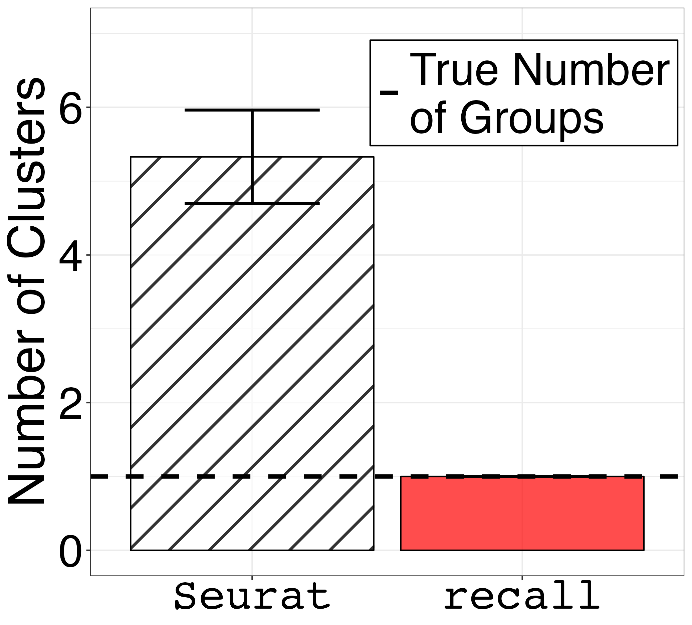

1. Clustering Simple Simulated Data (Figure 1)
01_figure1b-e.Rmd
suppressPackageStartupMessages({
library(splatter)
library(Seurat)
library(SeuratObject)
library(patchwork)
library(grid)
library(recall)
})Simulated Data With One True Group
First, we simulate data using splatter and convert the
data format to a SeuratObject. Setting
group.prob = c(1.0) results in a single group.
sim.groups <- splatter::splatSimulate(group.prob = c(1.0), method = "groups",
verbose = FALSE,
nGenes = 1000,
batchCells = 1000,
dropout.type = "experiment",
de.prob = 0.05)
seurat_obj <- Seurat::as.Seurat(sim.groups, counts = "counts", data = NULL)
seurat_obj <- SeuratObject::RenameAssays(object = seurat_obj, originalexp = 'RNA')
seurat_obj@meta.data$Group = 1Then, we run a typical analysis using Seurat and also
cluster using recall.
seurat_obj <- recall::seurat_workflow(seurat_obj, num_variable_features = 1000, resolution_param = 0.8)
seurat_obj <- recall::FindClustersRecall(seurat_obj, cores=6)Finally, we plot a UMAP of the results including the true labels
(only one in this case), the clusters found by Seurat with
default parameters, and the clusters found by recall.
simulation_one_group_scatter <- recallreproducibility::custom_scatter(seurat_obj, reduction = "umap", group_by = "Group", x_title = "UMAP 1", y_title = "UMAP 2", pt.size = 6) + Seurat::NoLegend()
simulation_one_group_seurat_scatter <- recallreproducibility::custom_scatter(seurat_obj, reduction = "umap", group_by = "seurat_clusters", x_title = "UMAP 1", y_title = "UMAP 2", pt.size = 6) + Seurat::NoLegend()
simulation_one_group_recall_scatter <- recallreproducibility::custom_scatter(seurat_obj, reduction = "umap", group_by = "recall_clusters", x_title = "UMAP 1", y_title = "UMAP 2", pt.size = 6) + Seurat::NoLegend()
ggplot2::ggsave("one_group_scatter.png", simulation_one_group_scatter, width = 1.2 * 2^12, height = 2^12, units = "px")
ggplot2::ggsave("one_group_seurat_scatter.png", simulation_one_group_seurat_scatter, width = 1.2 * 2^12, height = 2^12, units = "px")
ggplot2::ggsave("one_group_recall_scatter.png", simulation_one_group_recall_scatter, width = 1.2 * 2^12, height = 2^12, units = "px")| True Groups | Seurat Clusters | recall Clusters |
|---|---|---|
 |
 |
 |
Simulated Data With Three True Groups
First, we simulate data using splatter and convert the
data format to a SeuratObject. Setting
group.prob = c(0.6, 0.2, 0.2) results in three groups in
proportions of 60%, 20%, and 20%.
sim.groups <- splatter::splatSimulate(group.prob = c(0.6, 0.2, 0.2), method = "groups",
verbose = FALSE,
nGenes = 1000,
batchCells = 4000,
dropout.type = "experiment",
de.prob = 0.05)
seurat_obj <- Seurat::as.Seurat(sim.groups, counts = "counts", data = NULL)
seurat_obj <- SeuratObject::RenameAssays(object = seurat_obj, originalexp = 'RNA')Then, we run a typical analysis using Seurat and also
cluster using recall.
seurat_obj <- recall::seurat_workflow(seurat_obj, num_variable_features = 1000, resolution_param = 0.8)
seurat_obj <- recall::FindClustersRecall(seurat_obj, cores=6)We plot a UMAP of the results including the true labels, the clusters
found by Seurat with default parameters, and the clusters
found by recall.
simulation_three_groups_group_scatter <- recallreproducibility::custom_scatter(seurat_obj, reduction = "umap", group_by = "Group", x_title = "UMAP 1", y_title = "UMAP 2", pt.size = 2) + Seurat::NoLegend()
simulation_three_groups_seurat_scatter <- recallreproducibility::custom_scatter(seurat_obj, reduction = "umap", group_by = "seurat_clusters", x_title = "UMAP 1", y_title = "UMAP 2", pt.size = 2) + Seurat::NoLegend()
simulation_three_groups_recall_scatter <- recallreproducibility::custom_scatter(seurat_obj, reduction = "umap", group_by = "recall_clusters", x_title = "UMAP 1", y_title = "UMAP 2", pt.size = 2) + Seurat::NoLegend()
ggplot2::ggsave("three_group_scatter.png", simulation_three_groups_group_scatter, width = 1.2 * 2^12, height = 2^12, units = "px")
ggplot2::ggsave("three_group_seurat_scatter.png", simulation_three_groups_seurat_scatter, width = 1.2 * 2^12, height = 2^12, units = "px")
ggplot2::ggsave("three_group_recall_scatter.png", simulation_three_groups_recall_scatter, width = 1.2 * 2^12, height = 2^12, units = "px")| True Groups | Seurat Clusters | recall Clusters |
|---|---|---|
 |
 |
We plot the grid of UMAPs.
column_label_1 <- wrap_elements(panel = textGrob('True Labels', gp = gpar(fontsize = 64)))
column_label_2 <- wrap_elements(panel = textGrob('Seurat Default', gp = gpar(fontsize = 64)))
column_label_3 <- wrap_elements(panel = textGrob('recall', gp = gpar(fontsize = 64, fontfamily = "Courier")))
umap_grid <- column_label_1 + column_label_2 + column_label_3 +
simulation_one_group_scatter + simulation_one_group_seurat_scatter + simulation_one_group_recall_scatter +
column_label_1 + column_label_2 + column_label_3 +
simulation_three_groups_group_scatter + simulation_three_groups_seurat_scatter + simulation_three_groups_recall_scatter +
plot_layout(widths = c(5, 5, 5),
heights = c(1,3,1,3))
ggplot2::ggsave("umap_grid.png", umap_grid, width = 2 * 1.5 * 2^12, height = 2 * 2^12, units = "px")
Replicates of the simple simulations
We repeat this simulation 1000 times and save the results.
num_replicates <- 1000
num_seurat_clusters <- c()
num_recall_clusters <- c()
for (i in 1:num_replicates) {
print("Replicate")
print(i)
sim.groups <- splatter::splatSimulate(group.prob = c(1.0),
method = "groups",
seed = i,
verbose = FALSE,
nGenes = 1000,
batchCells = 1000,
dropout.type = "experiment",
de.prob = 0.05)
seurat_obj <- Seurat::as.Seurat(sim.groups, counts = "counts", data = NULL)
seurat_obj <- SeuratObject::RenameAssays(object = seurat_obj, originalexp = 'RNA')
seurat_obj@meta.data$Group = 1
seurat_obj <- recall::seurat_workflow(seurat_obj, num_variable_features = 1000, resolution_param = 0.8, algorithm = "NA", visualization_method = "NA")
seurat_obj <- recall::FindClustersRecall(seurat_obj, cores=12)
num_seurat_clusters[i] <- length(levels(seurat_obj@meta.data$seurat_clusters))
num_recall_clusters[i] <- length(levels(seurat_obj@meta.data$recall_clusters))
}
num_groups <- rep(1, num_replicates)
df_1_group <- data.frame(num_groups, num_seurat_clusters, num_recall_clusters)
num_seurat_clusters <- c()
num_recall_clusters <- c()
for (i in 1:num_replicates) {
print("Replicate")
print(i)
sim.groups <- splatter::splatSimulate(group.prob = c(0.6, 0.2, 0.2), method = "groups",
verbose = FALSE,
nGenes = 1000,
batchCells = 4000,
dropout.type = "experiment",
de.prob = 0.05)
seurat_obj <- Seurat::as.Seurat(sim.groups, counts = "counts", data = NULL)
seurat_obj <- SeuratObject::RenameAssays(object = seurat_obj, originalexp = 'RNA')
seurat_obj <- recall::seurat_workflow(seurat_obj, num_variable_features = 1000, resolution_param = 0.8, algorithm = "NA", visualization_method = "NA")
seurat_obj <- recall::FindClustersRecall(seurat_obj, cores=24)
num_seurat_clusters[i] <- length(levels(seurat_obj@meta.data$seurat_clusters))
num_recall_clusters[i] <- length(levels(seurat_obj@meta.data$recall_clusters))
}
num_groups <- rep(3, num_replicates)
df_3_groups <- data.frame(num_groups, num_seurat_clusters, num_recall_clusters)
write.csv(df_1_group, "one_group.csv")
write.csv(df_3_groups, "three_groups.csv")Plot results of simulation replicates
We now plot panels 1c and 1e. First we load libraries for plotting and data manipulation.
Then, we load the clustering results from the simulations above.
df_1_group <- read.csv("one_group.csv", row.names = 1)
df_1_group$num_groups <- NULL # drop unnecessary column
df_3_groups <- read.csv("three_groups.csv", row.names = 1)
df_3_groups$num_groups <- NULL # drop unnecessary columnWe plot the results for the one group simulations.
melted_df_1 <- melt(df_1_group)
df_summary_1_group <- melted_df_1 %>%
group_by(variable) %>%
summarize(mean = mean(value),
sd = sd(value))
colnames(df_summary_1_group) <- c("method", "mean", "sd")
small_text_size <- 32
large_text_size <-36
barplot_error_bars1 <- ggplot(df_summary_1_group) +
geom_bar_pattern(aes(x=method, y=mean, fill=method, pattern=method),
stat="identity",
position = "dodge",
color = "black",
alpha = 0.7,
pattern_fill = "black",
pattern_angle = 45,
pattern_density = 0.05,
pattern_spacing = 0.05,
pattern_key_scale_factor = 0.6) +
scale_pattern_manual(values = c(num_seurat_clusters = "stripe", num_recall_clusters = "none")) +
geom_errorbar( aes(x=method, ymin=mean-sd, ymax=mean+sd), width = 0.5, size=1) +
geom_hline(size = 1.5, aes(yintercept = 1, linetype="True Number\nof Groups")) +
scale_linetype_manual(values = 2) +
theme_bw() +
xlab("Method") +
ylab("Number of Clusters") +
theme(axis.text.x = element_text(size = small_text_size, family = "Courier", color="black"),
axis.text.y = element_text(size = small_text_size, color="black"),
axis.title = element_text(size = large_text_size),
axis.title.x = element_blank(),
strip.text = element_text(size = small_text_size),
legend.text = element_text(size = small_text_size),
legend.title = element_blank(),
plot.title = element_text(size = large_text_size, hjust = 0.5),
legend.position=c(0.73, 0.85),
legend.background = element_rect(colour = 'black', fill = 'white', linetype='solid')) +
scale_x_discrete(labels = c("Seurat", "recall")) +
scale_fill_manual(values = c("white", "red"), labels = c("recall", "Seurat")) +
ylim(0,7) +
guides(fill="none", pattern="none")We plot the results for the three groups simulations.
melted_df_3 <- melt(df_3_groups)
df_summary_3_groups <- melted_df_3 %>%
group_by(variable) %>%
summarize(mean = mean(value),
sd = sd(value))
colnames(df_summary_3_groups) <- c("method", "mean", "sd")
barplot_error_bars3 <- ggplot(df_summary_3_groups) +
geom_bar_pattern(aes(x=method, y=mean, fill=method, pattern=method),
stat="identity",
position = "dodge",
color = "black",
alpha = 0.7,
pattern_fill = "black",
pattern_angle = 45,
pattern_density = 0.05,
pattern_spacing = 0.05,
pattern_key_scale_factor = 0.6) +
scale_pattern_manual(values = c(num_seurat_clusters = "stripe", num_recall_clusters = "none")) +
geom_errorbar( aes(x=method, ymin=mean-sd, ymax=mean+sd), width = 0.5, size=1) +
geom_hline(size = 1.5, aes(yintercept = 3, linetype="True Number\nof Groups")) +
scale_linetype_manual(values = 2) +
theme_bw() +
xlab("Method") +
ylab("Number of Clusters") +
theme(axis.text.x = element_text(size = small_text_size, family = "Courier", color="black"),
axis.text.y = element_text(size = small_text_size, color="black"),
axis.title = element_text(size = large_text_size),
axis.title.x = element_blank(),
strip.text = element_text(size = small_text_size),
legend.text = element_text(size = small_text_size),
legend.title = element_blank(),
plot.title = element_text(size = large_text_size, hjust = 0.5),
legend.position=c(0.73, 0.85),
legend.background = element_rect(colour = 'black', fill = 'white', linetype='solid')) +
scale_x_discrete(labels = c("Seurat", "recall")) +
scale_fill_manual(values = c("white", "red"), labels = c("recall", "Seurat")) +
ylim(0,7) +
guides(fill="none", pattern="none")Finally, save the plots.
ggsave("fig1c.png", barplot_error_bars1, width = 1.2 * 1.2 * 1440, height = 1.3 * 1440, units = "px")
ggsave("fig1e.png", barplot_error_bars3, width = 1.2 * 1.2 * 1440, height = 1.3 * 1440, units = "px")| One Goup | Three Groups |
|---|---|
|  |